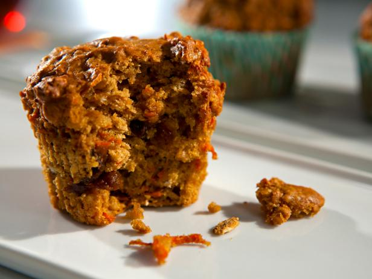

Morning Glory Muffins

Healthy delicious muffin
Ingredients (makes 12, recipe can be easily doubled)
Wet ingredients list
- 1 granny smith apple peeled and shredded
- 2 cups peeled and shredded carrots
- 3 eggs
- 2/3 cup oil (any neutral oil ie avocado, sunflower)
- 1/4 orange juice
- zest of 1 orange
- 2 tsp vanilla
Dry Ingredients list
- 2 cups all purpose flour
- 2tsp baking soda
- 1 cup brown sugar
- 1 tbsp ground cinnamon
- 1/2 tsp ground ginger
- 1/4 tsp nutmeg
- 1/2 tsp salt
- 1/2 c coconut
- 1/2 raisins
- 1/2 c chocolate chips (optional but worth it)
Instructions
Preheat oven to 350 F
- Mix wet ingredients list together in a bowl until thoroughly combined
- Combine dry ingredients list together in a separate bowl until throughly combined
- Add dry ingredients to wet ingredients, important to add dry to wet as it is easier to incorporate.
- Line cupcake pan with papers or cooking spray
- Fill each muffin tin until 3/4 full
- Bake for 25-30 minutes, until golden brown
- remove from pan and cool on cooling rack
These freeze very well